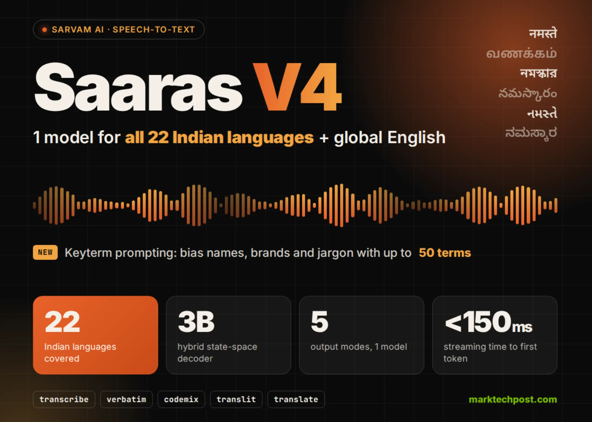

06 MarkTechPost 게시일 2026.09.26
Sarvam AI, 인도 22개 언어 STT Saaras V4 공개

이 모델은 다국어 음성 인식 서비스용이다. 한 모델로 인도 22개 언어와 영어를 처리하고, 결과 형식도 다섯 가지로 바꿔 낼 수 있다. 콜센터나 상담 녹취처럼 언어가 섞이고, 고유명사가 많은 환경을 겨냥한 설계가 눈에 띈다.
핵심 브리핑
Saaras V4는 인도 헌법상 22개 언어와 영어를 한 모델에서 받아쓰는 음성 인식 모델이다. Sarvam AI는 글로벌 영어 억양도 지원한다고 밝혔다.
배포 방식은 현재 API만 지원한다. 호출할 때 model="saaras:v4"를 쓰면 된다. 가중치는 공개하지 않았다. 자체 호스팅 문서는 현재 Saaras v3용만 있다.
모델은 오디오 인코더와 디코더 구조를 쓴다. 디코더는 Sarvam이 사내에서 처음부터 학습한 30억 개 매개변수 언어모델 Sarvam-3B라고 밝혔다. 긴 음성도 처리할 수 있게, 중간에 시계열 길이를 줄이는 어댑터를 둔다.
출력은 같은 음성에서 다섯 방식으로 고를 수 있다.
- transcribe: 원어 문자로 표기하고 숫자·날짜를 정규화
- verbatim: 군더더기 말과 말한 숫자까지 그대로 보존
- codemix: 원어 문자로 적되 영어 단어는 영문 유지
- translit: 전체 발화를 라틴 문자로 표기
- translate: 영어 번역으로 반환
새 기능인 keyterm prompting은 v4에서만 쓴다. JSON 리스트로 최대 50개 용어를 넣을 수 있고, 용어당 길이는 64자까지다. 다만 회사는 이 기능이 인식을 유도할 뿐, 해당 표현을 반드시 보장하지는 않는다고 적었다.
실시간 스트리밍은 WebSocket을 쓰고, 첫 토큰 시간은 150밀리초 미만이라고 회사가 밝혔다. REST는 30초 이하 짧은 음성을 동기 방식으로 처리한다. 배치 작업은 파일당 최대 2시간까지 비동기로 처리하고, 선택적으로 화자 분리도 붙일 수 있다.
가격은 실시간, 스트리밍, 배치 모두 시간당 30루피다. 화자 분리를 넣으면 시간당 45루피다. Saaras v3가 아직 기본 모델이고, V4로 바꾸는 요청 형식은 한 줄만 바꾸면 된다고 Sarvam은 설명했다.
스펙과 도입 조건
도입 조건은 비교적 단순하다. 지금은 클라우드 API 중심이고, 온프레미스(사내 서버에 직접 설치해 쓰는 방식)나 자체 호스팅은 V4 기준으로 아직 준비되지 않았다.
성능 수치는 모두 회사 자체 측정이다. 영어는 7개 데이터셋에서 평균 WER가 가장 낮았다고 밝혔다. 인도 언어는 Vistaar에서 10개 언어를 WER와 LLM-WER로 평가했다. 잡음이 많은 Kathbath Noisy에서는 LLM-WER 기준 오류율이 Deepgram Nova-3와 GPT-4o Transcribe의 절반 미만이라고 했다. 언어 식별 오류율은 검증된 IndicVoices 발화에서 상위 10개 인도 언어 기준 2.9%, 22개 전체 기준 5.22%였다. 아직 독립 재현 결과는 공개되지 않았다.
| 항목 | Sarvam Saaras V4 | Deepgram Nova-3 | ElevenLabs Scribe v2 | OpenAI GPT-4o Transcribe |
|---|---|---|---|---|
| 인도 공용 언어 지원 수 | 22 | 11 | 14 | 언어별 미기재 |
| 전체 지원 언어 | 23개(인도 22개+영어) | 45개 이상 | 90개 이상 | 다국어 |
| 키텀 바이어싱 | 최대 50개 용어 | 지원, 유료 추가 기능 | 배치 1,000개·실시간 50개, 유료 추가 기능 | 자유 형식 프롬프트 |
| 내장 출력 모드 | 5개 | 기본 전사+Smart Formatting | verbatim 또는 no_verbatim | Transcript |
| 실시간 스트리밍 | WebSocket, 첫 토큰 150밀리초 미만(회사 주장) | 지원(WebSocket) | Scribe v2 Realtime, 약 150밀리초 | 파일 스트리밍, 실시간은 Realtime API |
| 화자 분리 | 배치 API | 지원 | 최대 32명 | 별도 gpt-4o-transcribe-diarize 모델 |
| 표시 가격 | 시간당 30루피 | 분당 0.0052달러 | 시간당 0.22달러 | 분당 약 0.006달러 |
| 자체 호스팅 | V4는 아직 미지원, V3는 SageMaker | 지원 | 클라우드 API | 클라우드 API |
업계의 움직임
Sarvam은 비교 대상으로 Deepgram Nova-3, ElevenLabs Scribe v2, OpenAI GPT-4o Transcribe를 올렸다. 비교표를 보면 Saaras V4는 인도 공용 언어 지원 수와 출력 모드 수를 앞세운다.
다만 경쟁사 쪽의 공개 반응은 아직 확인되지 않았다. 독립 평가도 나오지 않았다. 지금 단계에서는 Sarvam이 강한 지역 특화 포지션을 먼저 잡으려는 움직임으로 읽힌다.
시사점과 체크포인트
우리 회사가 다국어 상담, 음성 민원, 회의록 자동화에 AI를 붙인다면, 이 모델이 주는 시사점은 분명하다. 한 모델에서 언어 인식, 표기 방식, 번역까지 처리하면 후처리 단계를 줄일 수 있다.
- 인도 고객센터나 현지 파트너 대응이 있다면, 언어 지원 범위가 실제 운영 언어와 맞는지 먼저 확인할 만하다.
- 브랜드명, 상품명, 사람 이름이 중요한 업무라면 keyterm prompting의 효과를 자체 데이터로 검증해야 한다. 회사도 인식 보장은 아니라고 밝혔다.
- 배치 작업은 최대 2시간 파일까지 지원한다. 장시간 상담 녹취나 회의 파일 처리에 맞을 수 있다. 반면 V4 자체 호스팅은 아직 없다.
- 금융권 도입이라면 음성 원본 저장 위치, 전송 구간 암호화, 화자 분리 정확도, 개인정보 마스킹 연계 여부를 따로 확인해야 한다.
- 성능 수치는 모두 벤더 자체 측정이다. 벤더 선택 전에는 우리 업무의 실제 잡음 환경과 혼합 언어 비율로 파일럿을 돌리는 편이 안전하다.
주요 용어
원문 정보
제목: Sarvam AI Releases Saaras V4: A Speech-to-Text Model for All 22 Indian Languages and Global English
게시일: 2026.09.26